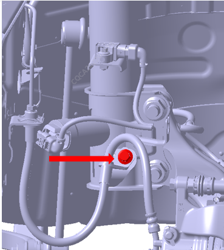
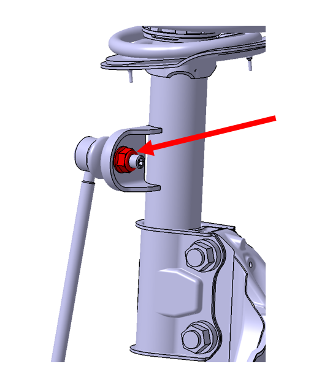
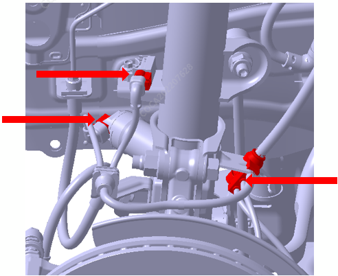
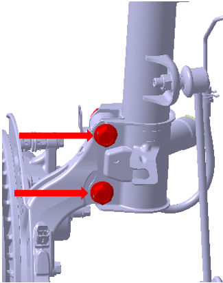
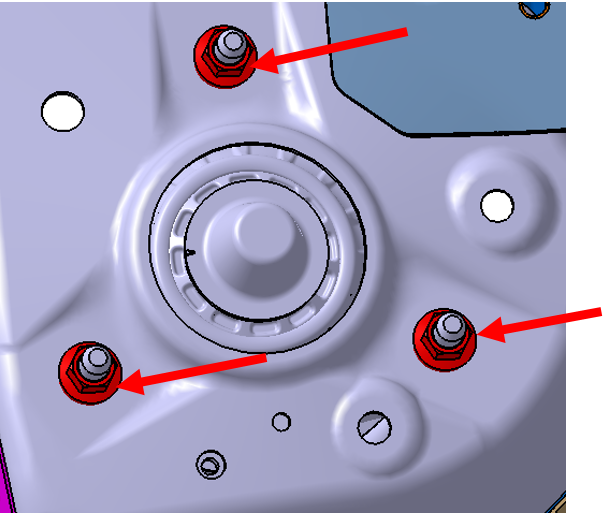
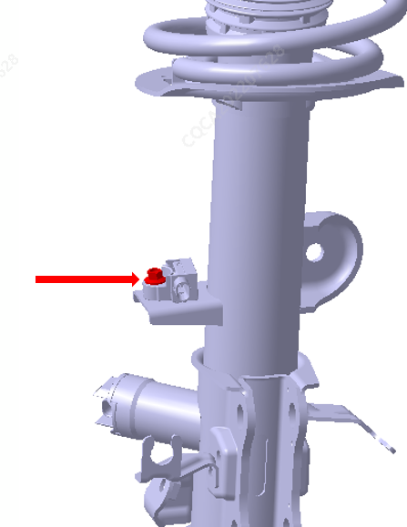

拆卸
断开蓄电池负极线束 。参考： 蓄电池总成
举升车辆，拆卸车轮。参考： 车轮和轮胎
拆卸前支柱上制动油管支架固定螺栓，扭矩：22±2N.m

拆卸前支柱与前连接杆总成连接螺母。扭矩120±12N.m

断开前支柱总成线束连接器

拆卸前支柱与转向节连接螺栓和螺母 。扭矩250±20N.m

拆卸机舱饰件。参考 拆卸和安装前罩装饰件总成
松开前支柱总成上端与车身连接的3处固定螺母，取出前支柱总成，扭矩：85±5 N.m

拆卸加速度传感器支架螺栓， 扭矩：9±1 N.m

安装
安装顺序与拆卸顺序相反，更换新前支柱总成时，确保左、右前支柱总成螺旋弹簧色标（色标位于弹簧下端第2.25圈附近位置，分为红色和白色两种颜色）相同。